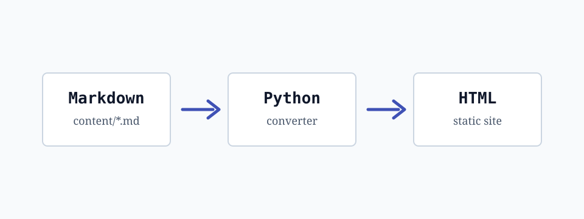

Dasturlash Muhitini Tushunish
Dasturchi uchun yaxshi muhit faqat kod yozadigan editor emas. U fikr -> kod -> test -> deploy oqimini tushunarli va takrorlanadigan qiladi.
Bu post sayt style tizimini test qilish uchun yozildi. Unda bold, italic, bold italic, bekor qilingan matn, inline code, ichki link, rasm sintaksisi

, jadval, checklist, blockquote va ko'p tilli code blocklar bor.Mundarija
Nima uchun muhit muhim?
Yaxshi muhit quyidagilarni beradi:
- tez feedback;
- aniq xatolik xabarlari;
- testlarni oson ishga tushirish;
- formatlash va linting;
- dokumentatsiyani avtomatik generate qilish.
Muhit yaxshi bo'lsa, dasturchi kamroq chalg'iydi va ko'proq qiymat yaratadi.
Bu ayniqsa statik site generator, documentation va blog platformalarda juda seziladi.
Ish jarayoni checklist
- Markdown faylda post yozish
- Python bilan HTML generate qilish
- Code blocklarga copy button qo'shish
- Search indeks qo'shish
- Markdown fayllardan avtomatik sitemap yaratish
Til tanlash
Har bir tilning kuchli tomoni bor. Muhimi bitta tilni "eng zo'r" deb emas, vazifaga mos vosita deb ko'rish.
| Til | Kuchli tomoni | Qayerda qulay |
|---|---|---|
| Go | Oddiy concurrency va tez build | CLI, backend, servislar |
| Python | Tez prototiplash | Generator, script, data |
| Rust | Xavfsizlik va performance | System tooling, parser |
| SQL | Ma'lumot bilan ishlash | Reporting, analytics |
| Bash | Tez avtomatlashtirish | DevOps, lokal workflow |
Heading darajalari
H4: kichik bo'lim
H5: mayda izoh
H6: eng kichik sarlavha
Kod misollari
Go
package main
import "fmt"
func main() {
users := []string{"Ali", "Vali", "Hasan"}
for _, user := range users {
fmt.Printf("Salom, %s!\n", user)
}
}Python
from dataclasses import dataclass
@dataclass
class Post:
title: str
slug: str
draft: bool = False
def publishable(posts: list[Post]) -> list[Post]:
return [post for post in posts if not post.draft]
posts = [
Post("Markdown generator", "markdown-generator"),
Post("Draft post", "draft", draft=True),
]
print(publishable(posts))Rust
#[derive(Debug)]
struct Post {
title: String,
slug: String,
}
fn main() {
let post = Post {
title: String::from("Static site generator"),
slug: String::from("static-site-generator"),
};
println!("{post:?}");
}SQL
select
title,
slug,
published_at
from posts
where draft = false
order by published_at desc
limit 10;Shell
$ python scripts/build_post.py content/programming-markdown-test.md post.html
$ python -m http.server 8000 --bind 127.0.0.1Bash
#!/usr/bin/env bash
set -euo pipefail
for file in content/*.md; do
echo "Generating ${file}"
doneCLI odatlari
Quyidagi tartib oddiy, lekin ko'p loyihalarda ishlaydi:
git status --shortbilan holatni ko'rish.- Markdown manbani o'zgartirish.
- Generatorni ishga tushirish.
- Browserda HTML natijani tekshirish.
- Faqat intentional fayllarni commit qilish.
Oddiy formula:
Markdown source -> Python converter -> semantic HTML -> static hostingXulosa
Markdown asosidagi workflow blog va documentation uchun juda qulay. Agar generator kichik, tushunarli va test qilish oson bo'lsa, loyiha vaqt o'tgani sari boshqarilishi qiyinlashmaydi.
Keyingi qadam: content/ ichidagi barcha .md fayllarni avtomatik ro'yxatga olib, index.html uchun post list generate qilish.